本文適用於 Windows 環境。
下載並安裝 Python
到 Python 官網下載安裝檔，安裝最新版本。
安裝時勾選 Add python.exe to PATH，讓 Python 自動加入 Windows 環境變數。
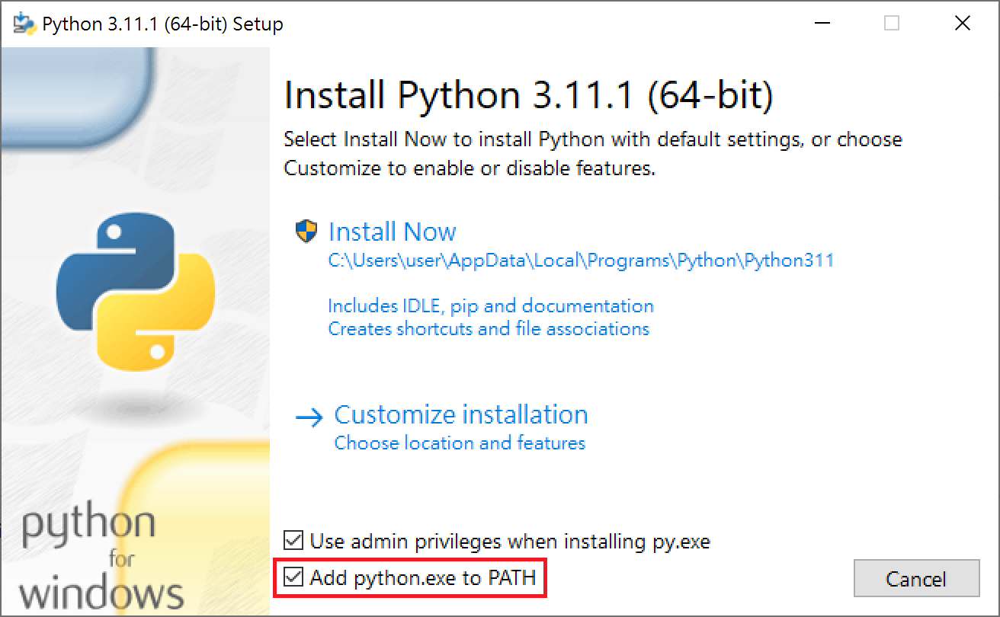
完成後打開 terminal，輸入python，跳出版本資訊就是安裝成功了~
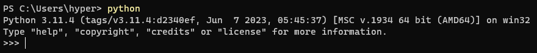
安裝 Visual Studio Code 與 Python 擴充套件
到 Visual Studio Code 官網下載安裝檔。
安裝完成後創建一個資料夾並拖到 VS Code 圖示上開啟。(或者打開 VS Code，選擇File > Open Folder)
在左邊的 Extensions 分頁搜尋 python，安裝這個擴充套件。
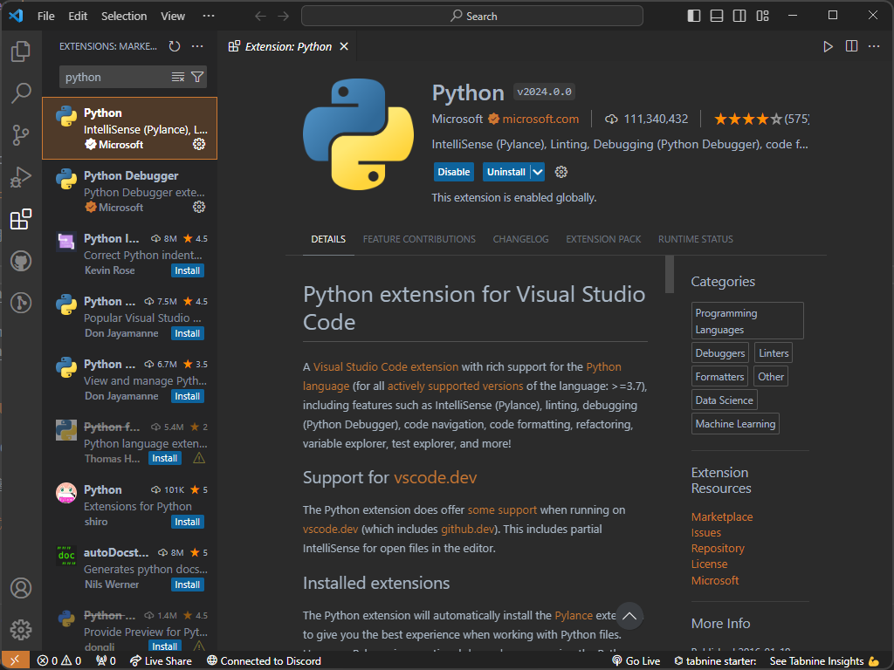
按左上角的 New File 圖示新增一個 .py 檔案
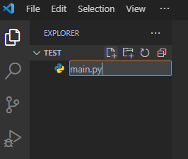
在 Terminal 輸入 python <filename>.py 就執行成功了！
如果 Terminal 沒有出現可以用Ctrl+`或View > Terminal開啟
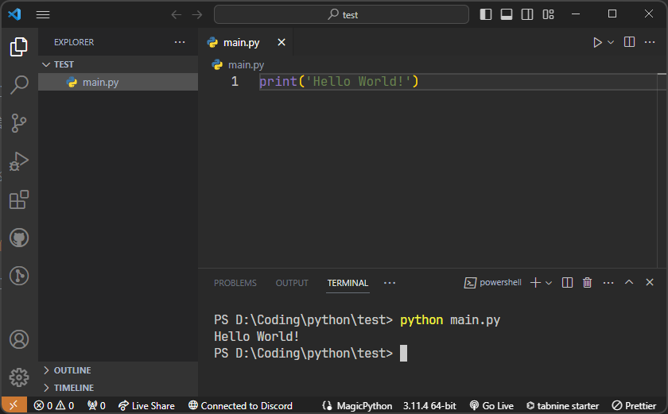
一鍵執行程式
每次執行程式都要打一串指令很麻煩，我們可以安裝 Code Runner 擴充套件來一鍵執行程式！
一樣在 Extensions 搜尋 code runner，安裝這個擴充套件。
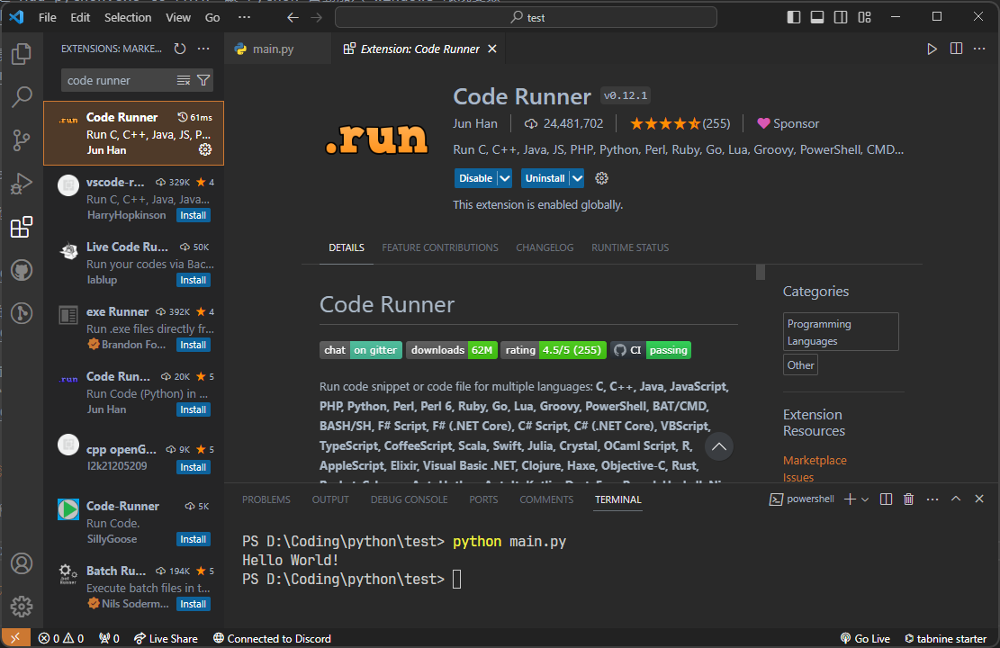
安裝完成後按齒輪開啟 Extension Settings。
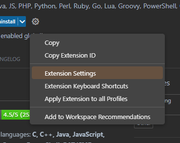
推薦把這三個設定打開，預設在 Terminal 執行(輸入 input 較方便)，且在執行程式前自動存檔。
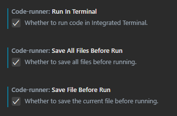
回到 Python 檔案，按下右上角的三角形或快捷鍵Ctrl+Alt+N就成功在 Terminal 執行了！
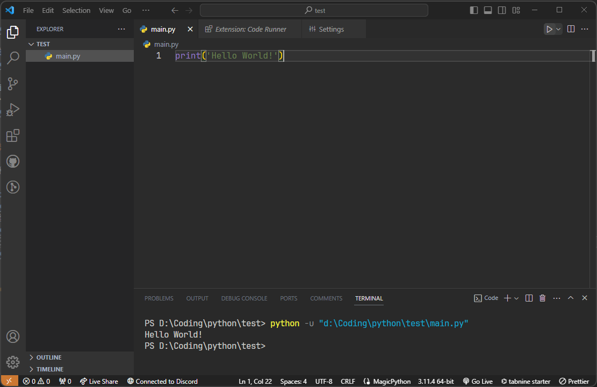
Code Runner 會自動偵測語言而產生不同的指令，所以其他語言也可以一鍵執行！
多檔案的執行
如果專案有很多檔案，但不想每次跑程式都還要開啟main.py，可以用 Code Runner 的 Custom Command 功能。
由於上面的做法是設定 Global Extension Settings，也就是所有專案的設定都會改變，因此我們這邊採用另一種方法，只改變目前專案的設定。
在專案資料夾新增.vscode/settings.json檔案
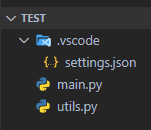
在裡面打上
{
"code-runner.customCommand": "python -u main.py"
}
之後在任何地方按下快捷鍵Ctrl+Alt+K都可以執行main.py了！
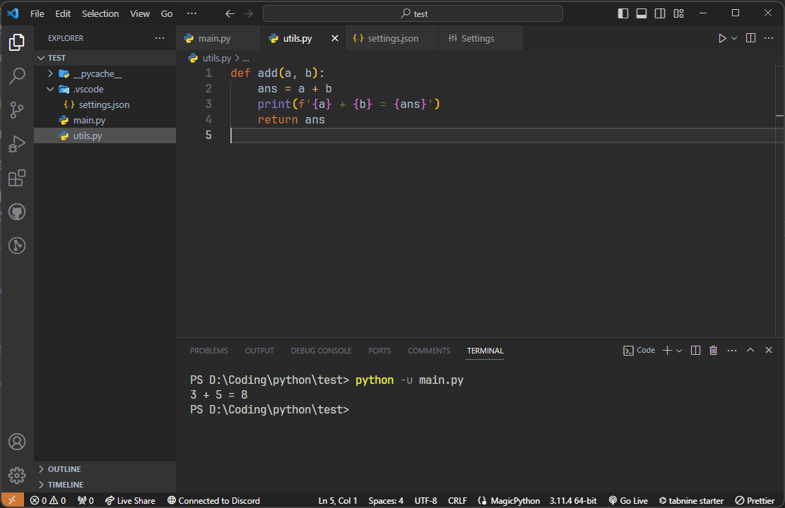
此外，VS Code 還有許多好用的快捷鍵，可以參考 常用 VS Code 快捷鍵
Python 虛擬環境
什麼是虛擬環境？
虛擬環境是一個獨立的開發環境，用來隔離不同專案的依賴關係，每個虛擬環境都有自己的 Python 版本和 Packages，不同的應用程式可以使用不同的虛擬環境，在同一台電腦上運作就不會互相影響。
建立虛擬環境
首先按快捷鍵Ctrl+Shift+P搜尋Python: Create Environment...並執行
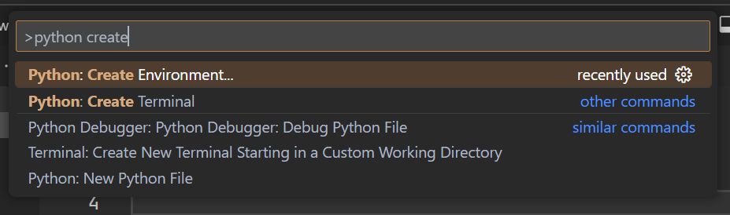
然後選擇venv > 你的Python版本，完成後會看到專案裡多了一個.venv的資料夾，而底下則會出現如圖的文字。
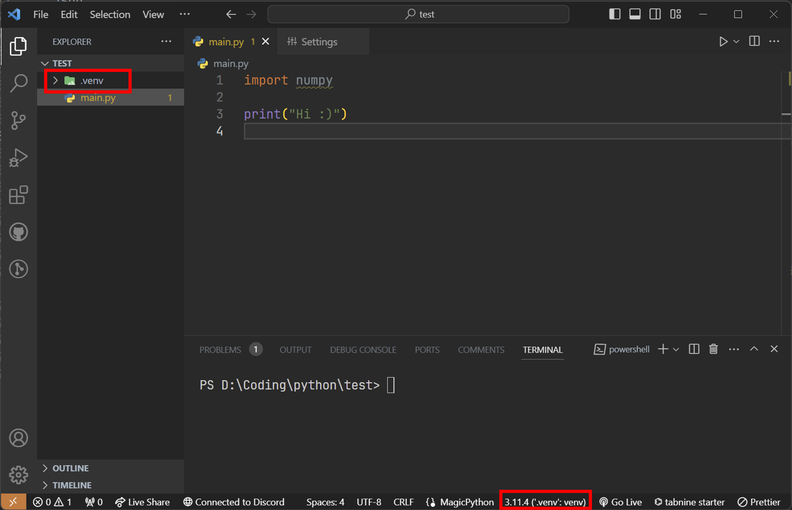
這時候打開 terminal 輸入
pip list
就可以發現套件已經被清空了，這時候再使用
pip install
就會安裝在虛擬環境裡了，不會影響到其他專案。